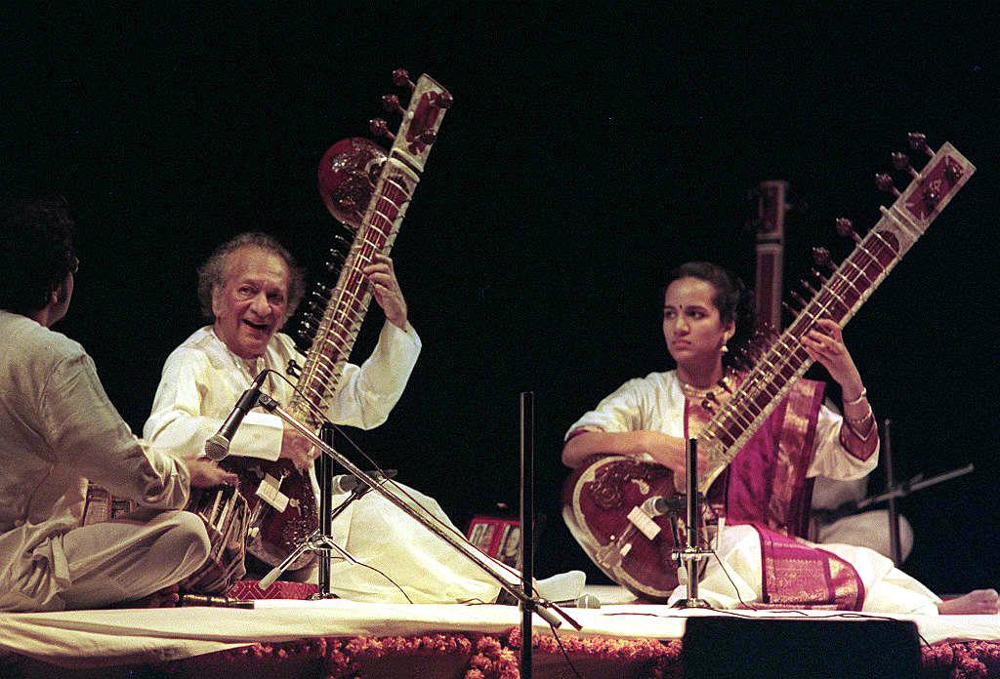

Music

Music has a place of primacy in Indian culture: in traditional aesthetics, music is often allegorised as 'the food of the soul'. It symbolises India's remarkable diversity in cultural, linguistic and religious terms and embodies the historical tides that
have shaped its contemporary pluralism.
But now a days our music is losing its colour but there are some people who nowadys also have been entacted with pure indain music but they need suport ." WILL YOU HEPL THEM ?
if you want to take a look on authentic indian music click on the button below .
Click here
Dance

Indian music is a rich tradition that originated in South Asia and can now be found in all corners of the world. It’s origins date back to sacred Vedic scriptures over 6,000 years ago where chants developed a system of musical notes and rhythmic cycles.
Indian music is very closely connected to nature.
But now a days our music is losing its colour but there are some people who nowadys also have been entacted with pure indain music but they need suport ." WILL YOU HEPL THEM ?"
Click here
Threatre
Theatre is an ancient aesthetic practice in India. Surviving play texts and treatises all suggest that theatre existed in the Indian subcontinent from the dawn of civilization.
According to the Natyashastra (compiled probably between 2000 BCE and 2nd century CE) of Bharata, an exhaustive treatise on the art of performance, drama was a gift from the gods to the humans. The treatise evinces how sophisticated
ancient Indian theatre must have been.
But nowdays modern cinema has taken over , there are very few and ethentic places left who still performs ancient form of theatre They need help from YOU . help them to maintain this tradition.
Click here